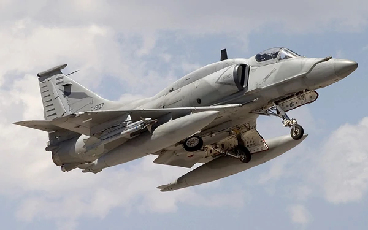

A-4
더글라스 A-4 스카이호크(Douglas A4 Skyhawk)는 미 해군과 미 해병대를 위해 개발된 단좌식 항공모함 함재기다. 삼각날개와 단발엔진의 스카이호크는 훗날 맥도널 더글러스가 되는 더글러스 에어크래프트가 개발하고 제작했다.

스카이호크는 최대 이륙중량 24,500 파운드(11,100 kg)의 경량기며 최고 속도 시속 600 마일(시속 970 킬로미터)이다. 다양한 미사일과 폭탄을 탑재할 수 있는 5개의 하드포인트가 있고 저고도로 핵무기를 운반할 수 있다. 스카이호크는 원래 라이트 J65 터보젯 엔진을 사용했으나, A-4E 모델부터는 프랫 앤 휘트니 J52 엔진을 사용했다.
스카이호크는 베트남 전쟁, 욤 키푸르 전쟁 그리고 포클랜드 전쟁에서 중요한 역할을 했다. 1954년 첫 비행 이후 60년 동안 3,000 대 가까이 생산되었고 세계 각국에서 사용됐다. 1998년 미국 해병대, 2003년 미국 해군에서 퇴역했으나, 아르헨티나 공군에서만 A4-AR 4대를 아직도 운용중이다. 브라질 해군은 2000년 프랑스에서 중고로 수입한 상파울루 항공모함의 함재기로 스카이호크를 활용했지만 현재는 운용이 중단되었다.
스카이호크는 구형 더글러스 AD 스카이레이더(나중에 A-1 스카이레이더로 재명명)를 제트 공격기로 대체하고자 하는 미국 해군의 요구에 부응하기 위해 더글러스 사의 에드 하이네만이 설계했다. 하이네만은 크기와 중량 그리고 복잡성을 최대한 줄이기 위해 설계를 최적화했다. 그 결과 해군의 요구 중량에 절반만 달했다. 날개도 작아서 항공기 격납고에 들어가기 위해 날개를 접을 필요도 없었다. 자그마한 스카이 호크는 곧 '스쿠터', '아동용차', '반탐봄머', '팅커 토이 봄머' 그리고 '하이네만의 애마'란 별명을 얻었다.
스카이호크는 제2차 세계 대전 이후의 전통적 디자인 체계인 하단 탑재의 삼각날개, 3개의 착륙바퀴, 동체 후미의 단발 터보젯 엔진과 동체 옆의 2개의 흡입구를 채택했다.
스카이호크는 전후시대에 상대적으로 흔한 미 해군 전투기가 되었다. 스카이호크의 작은 기체 크기 때문에 오래되고 작은 제 2차 세계 대전 시대의 항공모함에서 운용할 수 있었다.